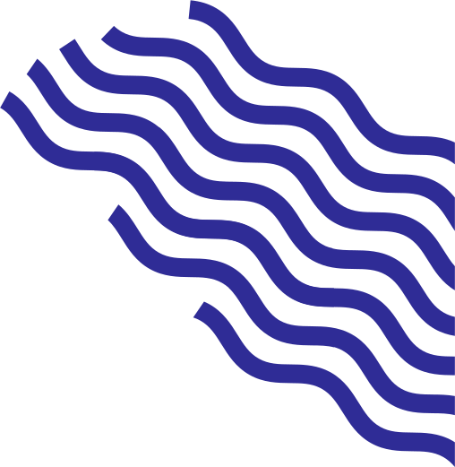
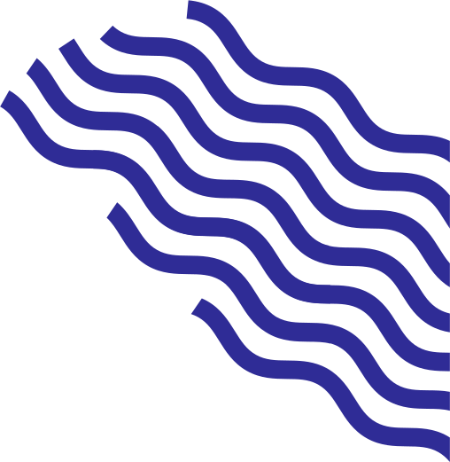

I always get stage fright any time we have to do calls with new potential friends and clients. It’s a talking thing for me… Or maybe not knowing when to stop. Dani said to me once that in our tandem, he was always good for the online calls because he could convey all our points in tight time in a straightforward way. That’s completely true. I on the other hand am the ‘good first date’, great for a less pressured meet like a coffee.
Last week I met with a CEO of mine from a previous role. Amazingly considered gentleman, always a good person to listen to when you want to properly gather your thoughts.
‘It’s always been a point for me to consider not what I’m doing in a job, but why I’m doing it in the first place. Why does this task right now, at this moment, deserve my energy?’
Now we’d of course thought about that, though in my own case maybe in a slightly more chaotic way, but we wanted that premise to FWRD, and how it transpires in our day to day missions.
1. Transparent Talks At FWRD, what you see is what you get. Clear waters where you can see right to the river bed. That’s how we operate internally and with our clients. No murky waters, no agendas. It’s not just about being upfront with numbers or metrics (though that's essential); it's about honesty in our intentions, our motivations, and our hopes for every project. If there’s a hiccup, we address it. If there’s a win, we celebrate it. That's how we build trust in a long lasting relationship.
2. Open Channels Our channels of communication are like open boulevards, welcoming every idea, concern, or even the odd meme to brighten up our day. It's this commitment to open dialogue that ensures no one's ever in the dark. It’s part of our culture, staying informed, and ready for action. Whether we're sharing a new idea, providing feedback, or simply checking in on each other, our channels of communication are always open. We're always in the loop, always connected, always striving to be on the same page.
3. The Joy of the Journey For us, it's never just about crossing the finish line; it's about the road, embracing the scenery, and taking all the pit stop learnings along the way. We’re passionate believers in the age-old saying, "It's not the destination, but the journey." Sure, we have our eyes on the prize, but we also cherish every brainstorming session, every lightbulb moment, and even those headdesk "why didn’t we think of that sooner?" revelations.
These are the bits of magic that gets this place buzzing with passion, and really carve out a complete end product. By design, FWRD is constructed to ensure every team member is empowered to engage, align, and, above all, feel their impact valued with the projects we take on, and that is fundamentally what keeps us ticking.
Yee-to-the-haw.
Matt
 
